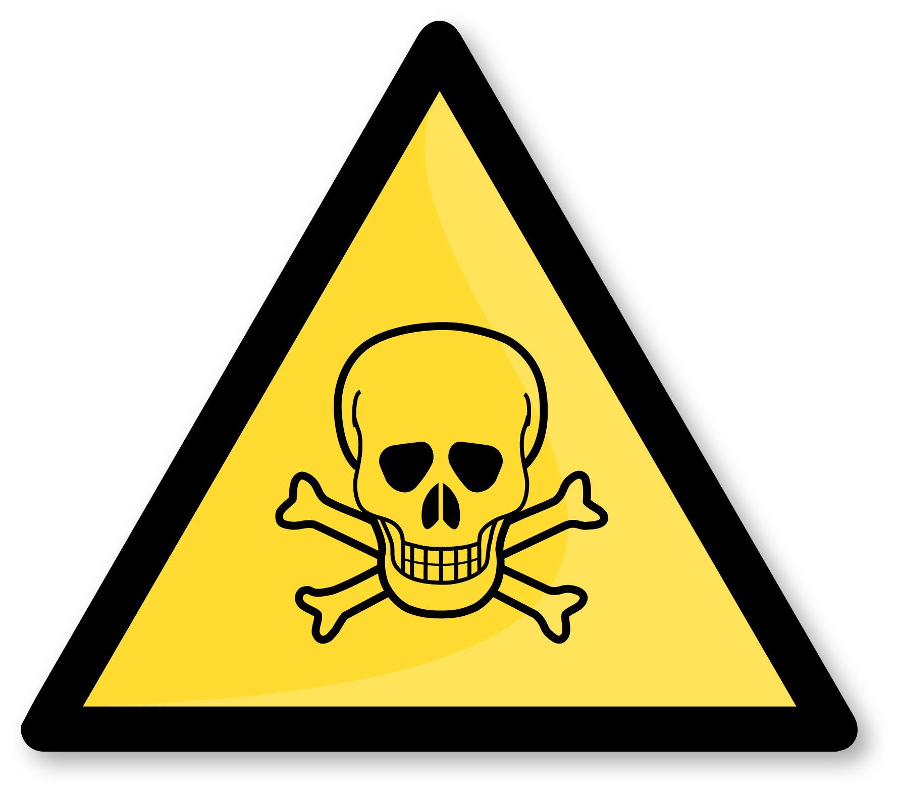
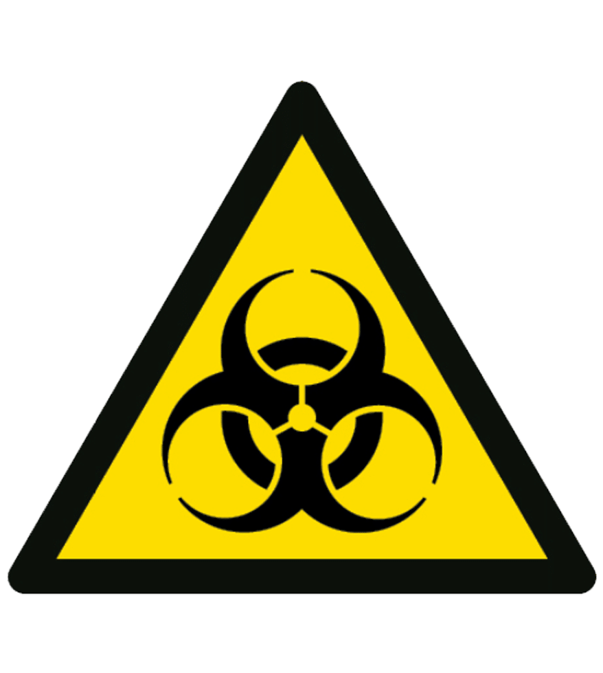
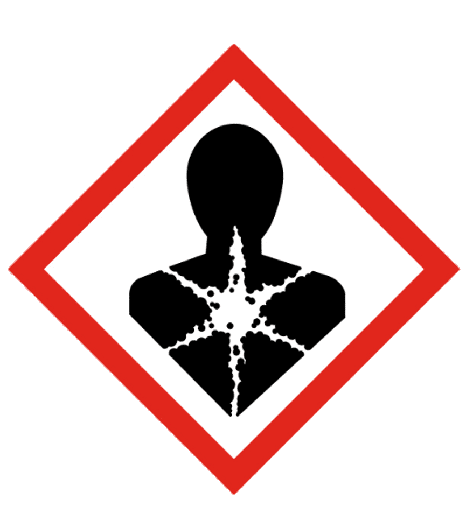
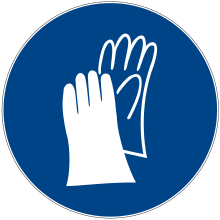
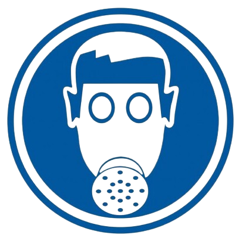

Desde este punto de vista, podemos diferenciar los siguientes grupos de enfermedades:
Intoxicaciones: enfermedades producidas por la acumulación de sustancias venenosas en el cuerpo, en dosis suficientes para producir trastornos. El agente causal es de tipo químico, actuando en el organismo por vía respiratoria, digestiva o cutánea. Sus efectos pueden ser agudos, si la dosis de tóxico es elevada, o crónicos, producidos por la acumulación paulatina de pequeñas cantidades. Según su naturaleza, pueden distinguirse tóxicos orgánicos (ácidos, alcoholes, disolventes, etc.) y tóxicos inorgánicos: mercurio, plomo, cromo, níquel, berilio, etc. 
Dominio público. Peligro mortal
Infecciones: enfermedades causadas por la penetración en el organismo de agentes patógenos vivos de tamaño microscópico (lo que las diferencia de las intoxicaciones, que están provocadas por materia inerte), como bacterias, virus, hongos y parásitos. Las vías de contagio son múltiples: respiratoria (tuberculosis, por ejemplo), digestiva (a través de alimentos contaminados, por ejemplo, la hepatitis vírica), dérmica (carbunco, brucelosis), heridas (rabia, tétanos, hepatitis) o una maceración cutánea (micosis). Son actividades sometidas a riesgo los trabajos agrícolas, los relacionados con animales y sus productos (veterinarios, mataderos), trabajo en hospitales y laboratorios. 
Dominio público. Peligro biológico
Alergias: reacción del organismo de tipo nervioso, respiratorio o eruptivo que se produce cuando la piel o las mucosas se ponen en contacto con sustancias que las sensibilizan y que, en condiciones normales no causan tales efectos. Las sustancias que pueden producir reacciones alérgicas son muchas: polvo, fibras, polen, etc.). Dominio público. Uso obligatorio de mascarilla
Cáncer: enfermedad por la que algunas células del cuerpo se multiplican sin control y se diseminan a otras partes del cuerpo ocasionada por múltiples compuestos utilizados en la industria, como el amianto, sustancias radiactivas, níquel, alquitrán, betún, arsénico, etc. 
Dominio público. Peligro agentes cancerígenos
Dermatosis profesional: enfermedad cutánea provocada por una reacción alérgica o tóxica frente a productos a los que el sujeto está expuesto debido a su profesión o por una infección contraída en el trabajo. Constituyen el grupo de enfermedades profesionales más frecuente. Muchas de ellas son conocidas desde antiguo, como el eczema del cemento (frecuente en la construcción) o la dermatosis de los cromadores y curtidores, etc. otras nuevas dermatosis aparecen con frecuencia, debido al uso continuo de nuevos productos en la industria. 
Dominio público. Uso obligatorio de guantes
Neumoconiosis: grupo de enfermedades respiratorias provocadas por la inhalación y fijación en los pulmones de partículas de polvo y fibras en suspensión. Pueden ser originadas por sustancias minerales (polvo de sílice, de hierro, etc.), vegetales (algodón, lino, etc.) y animales (pelos, plumas). La más conocida es la silicosis, enfermedad profesional de los mineros por excelencia. 
Dominio público. Uso obligatorio de máscara
Enfermedades producidas poragentes físicos: ruido, temperaturas inadecuadas (frío o calor), presión, radiaciones ionizantes (radiactividad) y no ionizantes (infrarrojas, ultravioleta, láser), etc.Dominio público. Peligro radiaciones
Otras enfermedades:enfermedades óseas, motivadas por posturas inadecuadas al trabajar (lesiones de columna, en las rodillas, lumbago, etc.); las llamadas “fracturas por desgaste”, típicas de los trabajadores que utilizan herramientas que producen vibraciones (martillos neumáticos, remachadoras); hernias, provocadas por un importante y brusco esfuerzo físico; nistagmo de los mineros, consistente en espasmos involuntarios de los ojos producido por trabajar en recintos poco iluminados, etc. Dominio público. Obligatorio correcta manipulación manual de cargas